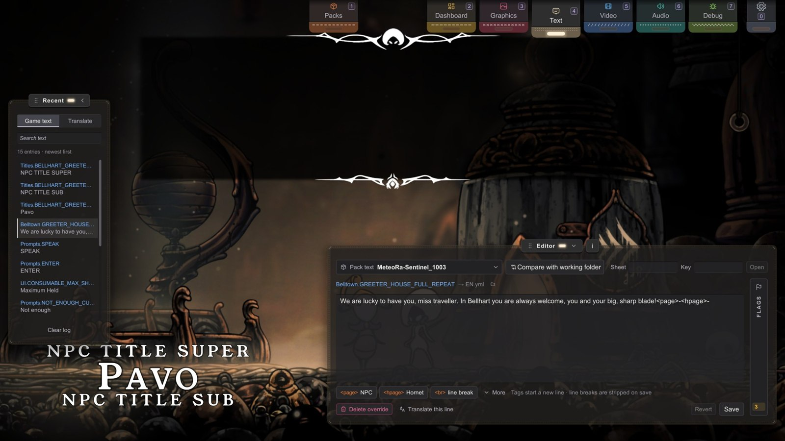

C1 文本与对话
文本 · 面向创作者
这是最容易上手的资源类型——不用绘图软件，也不用音频编辑器。
在开发中心找到一句对话或一条文字提示，改掉，点击保存，完成。
无论是彻底重写、新增翻译/本地化，还是做个玩梗补丁，工作流程都完全相同。
你将学会：
通过开发中心的编辑器修改任意对话、物品名称或界面文本；理解编辑器生成的 YAML 文件；
使用游戏支持的文本标签排版对话；
逐行翻译游戏，或者翻译 Stitchwork 本身；
以及制作支持多语言的文本资源包。
开始之前：
请先阅读模块 A。
可以替换哪些内容
凡是游戏通过本地化系统读取的文本，都可以替换，包括：
- NPC 与 Boss 对话
- 物品名称与说明
- 界面提示、工具提示、菜单文本
- 祈愿墙（任务）文本
- 区域、幕（如“第一幕”）和 NPC 的标题卡
只要是屏幕上显示的文字，基本都可以修改。
最简单的方法——让编辑器帮你生成文件
当然你可以手写文本文件，但绝大多数情况下没有必要。
开发中心的文本标签页会帮你定位文本，并自动生成对应文件：
- 打开文本标签页（按
4，或点击它在屏幕顶部的标签页）。
会打开两个面板：左侧的最近和右下方的编辑器。
最近面板按从新到旧的顺序，列出游戏读取过的(sheet, key)文本行——所以只要触发或靠近你想改的那句文本，它就会出现在列表最上方。 - 点击一个键，例如
Wanderers.HUNTER_FAN_GREET，编辑器会载入对应内容。 - 修改文本。如有需要，使用按钮插入分页或换行标签。
- 点击保存。
Stitchwork 会将 YAML 写入你的工作区文件夹：Text/{Sheet}/{Lang}.yml。
整个流程就是这么简单。
注意：修改要等这句文本下一次被触发时才会显示。如果这条文本现在就在屏幕上，先把它关掉，再重新触发一次。

编辑器里的修改永远优先。文本和颜色规则是仅有的两种工作区文件夹压过所有资源包的资源类型（其他类型都是资源包优先于根目录）。编辑器保存到你的工作区文件夹，所以你输入什么，游戏里就显示什么——每次都是如此。
最近面板与编辑器详解
查找一行文本
- 最近面板保留最新的 15 行。较早的行会在 10 秒内逐渐淡出（配置项
TextLogMaxVisible和TextLogDuration）。清空日志会清空列表。 - 搜索文本会在表名、键值和文本内容中查找，也会搜索你已加载的替换文件。在替换文件里找到的结果，会列在“已加载的替换，本次运行中未出现”下面。
- 按名称打开一行：在编辑器顶部填写它的表和键值，然后点击打开（或在键值输入框里按 Enter）。文本框里一开始是游戏当前显示的文字。如果游戏里没有这个表和键值对应的文本，输入框就是空的。
- 有未保存的修改时，点击另一行会先询问你：先保存，再打开还是放弃修改。点击右键可以取消。
- 没有未保存的修改时，在最近面板里点击当前打开的那一行，会重新读取它。
编辑器按钮
- 保存会写入编辑器显示在这行文本名称后面的那个文件，例如
→ EN.yml（写入哪种语言）。还没保存的修改会保留它原来的语言，所以保存会写入你编辑时所用语言的文件。修改还没保存时，保存按钮会显示为保存 *。 - 文件名旁边的文件夹按钮会在文件夹里定位这行文本的来源文件：优先是你工作区文件夹里的文件，没有的话就是游戏正在读取的那个资源包里的文件。如果这行是游戏自己的原文，按钮会打开保存写入的文件夹。
- 还原会丢弃你的修改。
- 删除替换会把你的这行文本从工作区文件夹的文件里删掉。需要点两次：第一次点击后，按钮会变成“点击删除”。
- 请翻译这一行会在翻译模式中打开这行文本。
编辑器生成的内容——YAML 文件
编辑器最终生成的是一个结构非常简单、可读性很高的 YAML 文件。
了解它的格式，能帮助你手动修改或检查内容：
# Stitchwork text replacement
KEY_NAME: "Replacement text"
ANOTHER_KEY: "Supports \"escaped quotes\" if needed"#表示注释。- 每一项都是
KEY: "value"的形式。
键（Key）区分大小写——请从最近列表里复制，不要手动输入。键前后的空格不算在内。 - 文本内容使用双引号包裹。
文件路径：
Text/{SheetName}/{LANG}.ymlSheetName 是本地化表名称（例如 Wanderers、Prompts、Quests 等）；LANG 是语言代码（例如 EN、ZH、FR、JA 等）。
对话排版——文本标签
游戏中的换行、翻页并不是靠 YAML 里的换行实现，而是依靠标签（Tag）：
<page>——换页，后面的文字显示在新的 NPC 对话框里（按钮：<page>NPC）<hpage>——换页，后面的文字显示在新的大黄蜂对话框里（按钮：<hpage>大黄蜂（玩家角色））<br>——同一页内换行（按钮：<br>换行）<page=S>、<page=T>、<page=L>、<page=B>、<page=M>——用途不明。可能是其他样式的翻页，很可能已经不再使用。需要时可以在编辑器的更多里找到。
建议使用编辑器提供的标签按钮插入这些标签，它们会自动处理必要的格式细节，确保游戏中的排版正确。
编辑器中的显示 ≠ 实际保存内容。
编辑器会在每个标签前另起一行显示。在中文或日文文本里，它还会在句末（。、！、？）把过长的一行断开。在西文的 .、! 或 ? 后面，它从不断行。你也可以在编辑器里按 Enter 整理文字。
这些换行都不会写入 YAML，也不会出现在游戏里；文本下方的提示写着“标签会另起一行 · 保存时会去掉换行”。
转义规则——记住三条就够了
在双引号包裹的文本中：
- 双引号写作
\" - 反斜杠写作
\\ - 不要直接输入换行。请使用
<br>。如果在 YAML 中插入真正的换行，当前条目会被截断，游戏只会读取换行之前的内容。
多语言支持
如果希望同时支持多个语言，只需在每个文本表目录下放置对应语言的 YAML 文件：
Text/Wanderers/
EN.yml
ZH.yml
JA.yml游戏会根据当前所选语言自动读取对应文件，因此玩家在游戏中切换语言后，也会自动切换到对应语言的文本覆盖。需要注意的是：编辑器使用的是游戏当前的语言——如果你正在制作 ZH 文本，但游戏语言仍然设置为英文，就会误存到 EN.yml。保存之前，编辑器会标出要写入的文件（→ EN.yml）。
有两种方法可以写对文件：
- 先切换游戏语言（在游戏自己的选项菜单里）。
- 使用翻译模式的游戏来源。它可以写入任何语言，游戏也不用切换当前语言。
翻译模式
最近面板顶部有一个切换开关：游戏文本 | 翻译。翻译会把两个面板变成给译者用的工作台：左侧是文本列表，另一边是翻译面板，参照文本和你的译文并排显示。翻译面板顶部的栏用来选择来源。编辑器里的请翻译这一行会在这里打开那行文本，来源为游戏。
游戏——游戏自己的文本：
- 用从选择参照语言。箭头指向目标，也就是你要写入的语言槽。
- 每行译文都保存到你工作区文件夹中的
Text/，和编辑器写入的是同一个文件。<Sheet>/ <LANG>.yml - 游戏以目标语言运行时，栏上显示游戏中已生效。否则会显示“游戏当前语言为……”，以及一个用来切换游戏语言的以……运行按钮。
- 游戏本身没有的语言，需要覆盖游戏已有的某个语言槽。选你要用来游玩的那个槽（通常是
EN），并保留EN作为参照。
绣补——Stitchwork 自己界面上的文字：
- 选择一个语言文件，或者点击新语言…。填写代码和名称，然后点击创建（按钮上会显示新文件的名称）。
- 你的文件会保存到工作区文件夹中的
Lang/<code>.yml（默认是<Game folder>\Stitchwork\Lang\）。Stitchwork 会用它覆盖自带的同语言文件。 - 在界面中显示会让 Stitchwork 在你工作时用这种语言显示界面。
逐条处理列表
- 筛选项有审阅（等你过目的草稿，比如机器翻译）、待办（还没有翻译，或者被退回的）和全部。
- 主按钮会随当前这一行变化。保存写入你的修改。通过按原样接受草稿。保留（仅限游戏来源）表示游戏原文没问题，不做替换；文件里会多一条
# kept:注释。如果游戏更新改动了这行原文，它会回到待办。 - 后面还有下一行时，按钮会显示为“……并下一条”，并打开下一行。
- 对于草稿，需要修改会把它退回，还可以附上一条备注。
- 删除替换（仅限游戏来源）会从文件里删掉你的这行译文。需要点两次。
- 文本下方的一排小块会核对标签和占位符：参照文本里有的，每个都要保留，也不能多加。在游戏文本里，每个出现的次数还要和参照文本一致。点击小块就能把它插入文本。
- 在文本框里，
Ctrl+Enter相当于点击主按钮。Ctrl+↑和Ctrl+↓在列表中上下移动。 - 文件夹按钮会打开工作区文件夹中的
Text/或Lang/，方便你从那里把文件发出去。
测试只播放一次的对白
初次见面的对白，或者只能触发一次的过场动画文本，验证起来往往很麻烦——正常情况下，你必须重新开档才能再次看到它们。
更实用的方法是使用 DebugMod 的 savestate（存档快照）：
- 在对白触发前保存一个快照。
- 修改文本。
- 恢复快照。
- 在原本的剧情里再看一遍这句文本，想看几次都行。
即使是标记编辑器无法追踪的对白，也能通过这种方式反复验证。
详见存档状态测试（DebugMod）。
说明：DebugMod 的面板显示时，按 Stitchwork 的按键不会打开任何东西。这时会出现一条消息绣补未打开，告诉你该怎么做：先用 DebugMod 的切换键隐藏它的面板，再按一次 Stitchwork 的按键。参见其他模组。
（游戏存档）标记栏
我们的标记编辑器，就是编辑器右边缘的（游戏存档）标记栏。它会列出本次运行中改变过的 PlayerData 标记，以及每个标记最初的值（orig:）。你可以手动设置标记，全部重置会把所有标记恢复原样。筛选标记和仅剧情可以让列表更短。
把文本移进资源包
编辑器会保存到工作区文件夹，而不是你的资源包里。文本准备好以后，点击编辑器顶部的为你的文本选择资源包，选中你的资源包。这时栏上会显示资源包文本和资源包的名称。重启之后，Stitchwork 仍会记住这个选择。点击与工作区文件夹内容对照。对照界面会占据编辑器的位置，列出所有差异：
- 已更改——两边都有这个键值，但文本不同。选择工作区文件夹、资源包或自定义（一个输入框，初始内容是资源包的文本）。全部采用：工作区和全部采用：资源包会一次性决定所有键值。
- 新表——整份表文件，资源包里还没有这张表。勾选属于这个资源包的那些。如果没有其他资源包带有文本，它们默认就是勾选的。
- 工作区文件夹中新增——资源包里还没有的键值。推送会把它们带进资源包。
- 仅在资源包中——推送不会动它们；拉取会把它们复制到工作区文件夹。
- 相同——资源包里已经有这些了。推送会删除工作区文件夹里的副本。
按钮：
- 推送 {n} 项 → 资源包会把勾选的和已决定的文本写入资源包，再把这些键值移出工作区文件夹，这样游戏读取的就是资源包里的那份。Customizer 资源包是只读的，所以不能推送到它们。
- 拉取 {n} ← 资源包正好反过来：它会把资源包的文本复制到工作区文件夹，方便你编辑。
- 放弃会关闭对照。
还没决定的键值在两边都保持不变。推送和拉取在动手之前，会先把要改动的目录备份到旁边一个带时间戳的文件夹里。
有未保存的修改时，对照会先询问你：先保存，再对照还是不含修改直接对照。